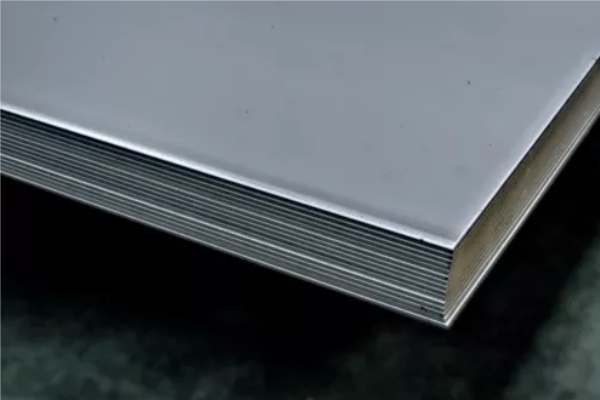
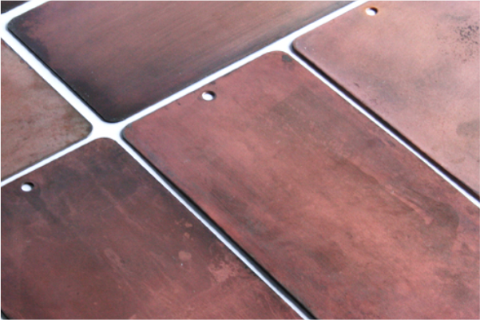
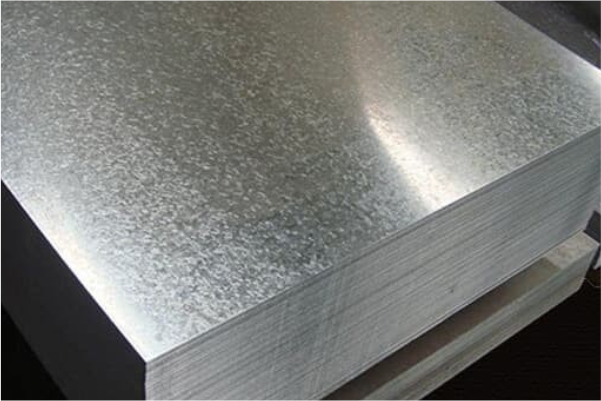
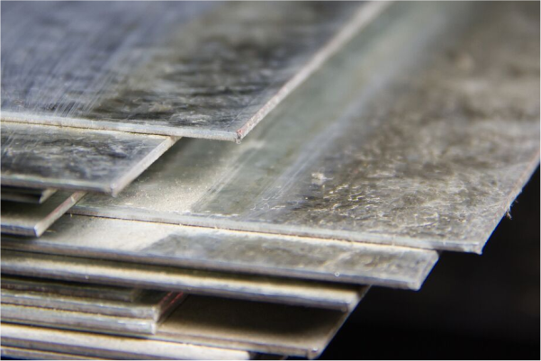
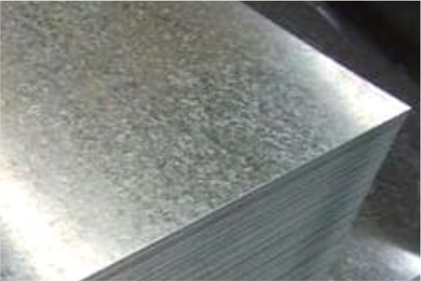

Acero inoxidable



ELEGANTE, VERSATIL Y DURADERO.
Su resistencia a la corrocion y aspecto brillante lo hace ideal a la hora de trabajar avisos, señalización y joyeria.
Algunas de sus aleaciones mas comunes son:
304
316L
430
Cold Rolled



RUSTICO, MALEABLE Y RECEPTIVO.
Su debilidad a la corrocion le hace el material ideal a la hora de buscar acabados envejecidos y rusticos, ideal cuando se requieren trabajos de dobleces y/o soldadura.
Lamina Galvanizada



RESISTENTE Y RECEPTIVO.
Su cubierta de zinc la hace resistente a la corrosion permitiendole mantener las capacidades receptivas de la pintura y la soldadura a costa de la dificultad para su corte en laser.